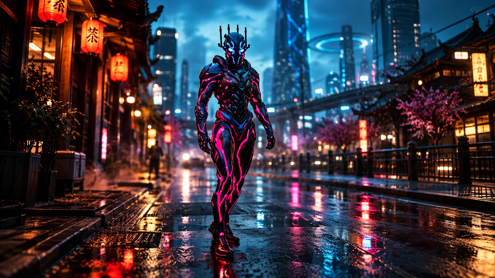

Field Observation
Herko investigates a green alien beacon glowing at street level on the left. The beacon implies an alien navigation point embedded in an Earth 1 district.
 ©
©
GENEZYS ARCHIVE · Legionnaire
Mineral Cultivator
Identity & combat record
Archive node 01 / 04
Archive record
Herko spent a decade growing a forest of stalactites, and can bring it down in a single moment. The Stalactite Bloom strikes every enemy on the field at once. The Honor Warden teaches that strength grown slowly cannot be broken quickly.
Combat signature
Aligns power for a finishing thrust of stalactite: Deals 80 damage to all.
Genezys 05:05 ™&©2026LEGIONS
Field intelligence
Archive node 02 / 04
FIELD REPORT // BEACON INVESTIGATION

Field Observation
Herko investigates a green alien beacon glowing at street level on the left. The beacon implies an alien navigation point embedded in an Earth 1 district.
Environment
Object Analysis
Key Findings
Restricted visual records
Archive node 03 / 04

Motion archive
Archive node 04 / 04
Motion record not yet recovered